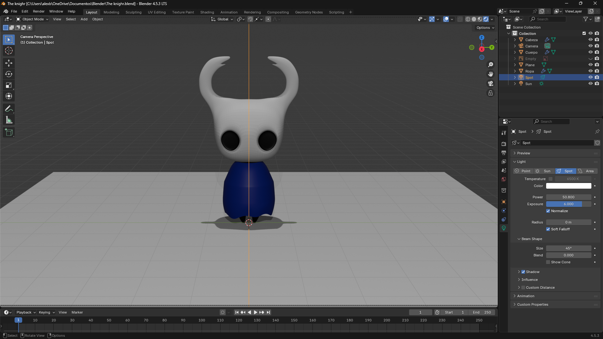
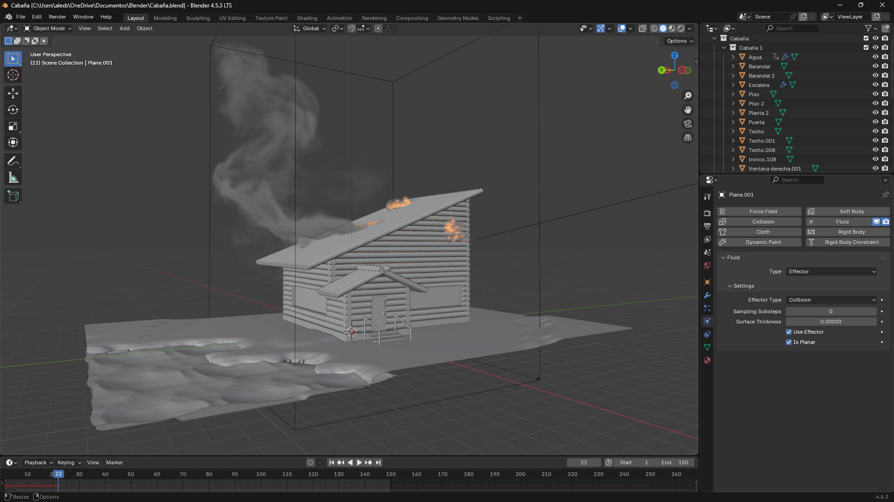
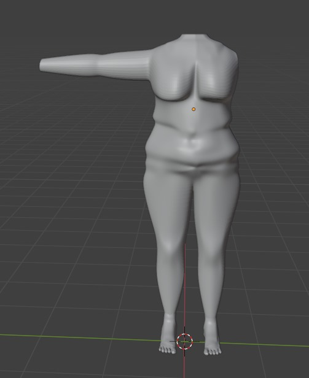
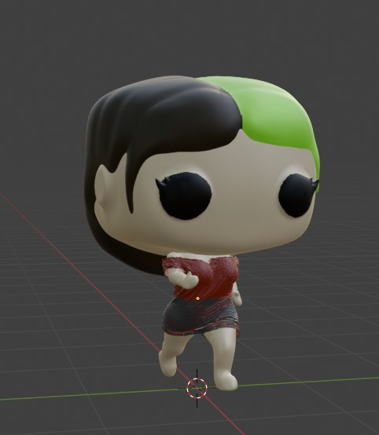
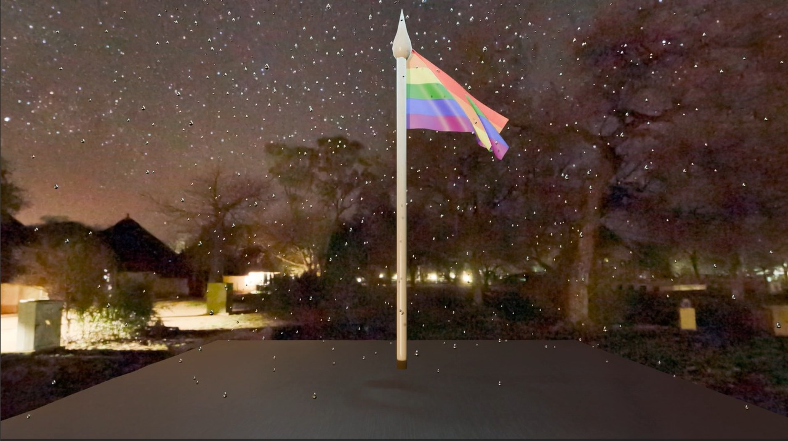
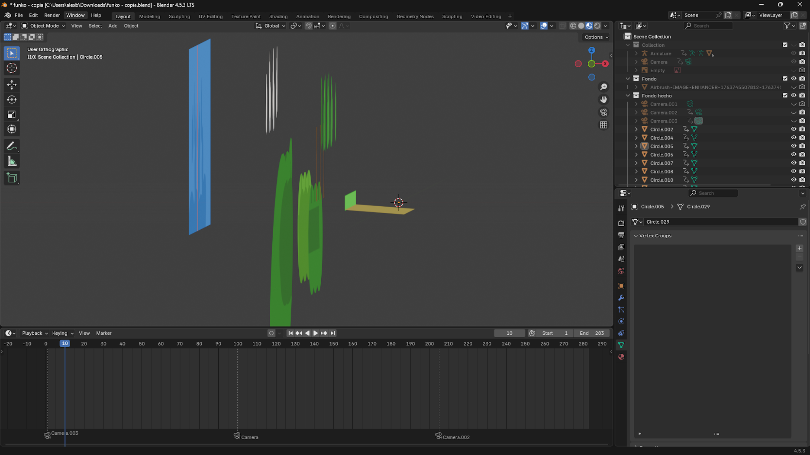
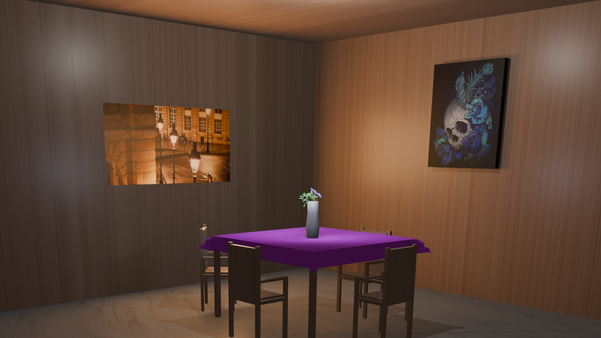
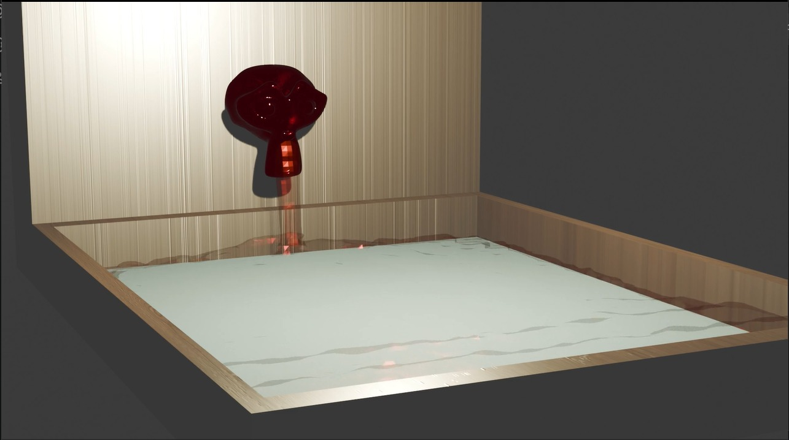
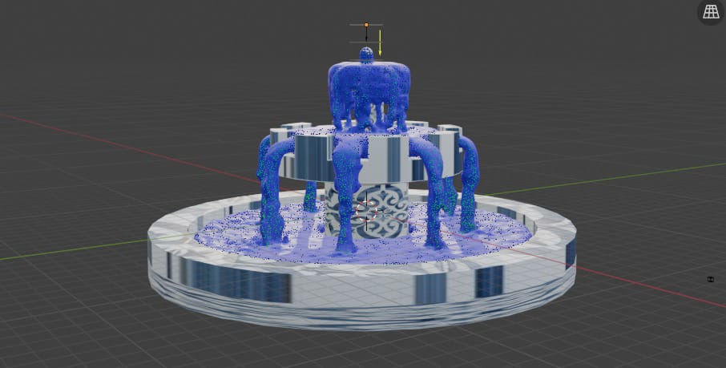

Diseño 3D
Trabajos de modelado y renderizado en entornos tridimensionales. Esta seccion muestra la creacion de objetos, escenarios y composiciones digitales, aplicando concepttos de iluminacion, textura y perspectiva.

Caballero de Silksong
Figura 3d de un caballero del mundo de Silksong
Diseño 3D hecho por Alejandro en la aplicacion de blender. Esta modelado apartir de un solo circulo y con la herramienta de cuchillo para agregar cortes que ayudaron a la construccion de los cuenrnos, se le agregaron texturas de color solido para darle profundidad a los ojos y color a las ropas.

Practica 3D
Practica de modelado 3D de una casa en explosion con Blender
Diseño 3D hecho por Alejandro en la aplicacion de blender. Casa hecha a base de troncos modelados de un circulo cada uno.se agrego un cuadro para el piso al cual se le agregaron divisiones para darle hundiduras o elevanciones ademas de poder contener un pequeño lago.

Casa 3D
Casa que explota con animación de agua incluida.
Diseño 3D hecho por Jocelyn en la aplicacion de blender. Casa hecha en base a un cuadrado, con texturas de madera oscura. se agrego un cuadro para el piso al cual se le agregaron divisiones para darle hundiduras o elevanciones ademas de poder contener un pequeño lago que esta en constante movimiento, asu vez en las zonas con textura verde se aplico la herramienta cabello para agregarle pasto que se mueve tambien con una fisica de aire.

Cuarto 3D
Modelado 3D de un cuarto con Blender
Diseño 3D hecho por Alejandro en la aplicacion de blender. Se hizo la base de la cama y el colchon apartir de un cubo agregando capas y nodos para separarlos. La sabana esta hecha apartir de un cuadrado con subdivisiones altas y agregandole la fisica de gravedad y colision para que se ajustara al colchon. las almogadas son dos cuadrados cocidos y con una herramienta llamada relleno, lo que le da ese efecto de relleno esponjoso. El cuadro esta hecho de un cuadrado con textura de madera y una foto.

Comedor 3D
Modelado 3D de un comedor con Blender
Diseño 3D hecho por Alejandro en la aplicacion de blender. Se uso un cubo como base para la creacion de silla separandolo en diferentes capas y de ahi sacando las patas. el florero y la planta se hicieron en otro archivo y se exporto a este, el fondo es una foto libre de derechos sobre paris, se ajusto la luz para ser similar, se agrego textura para dar un poco mas de realismo.

Cuerpo 3D
Modelado 3D de un cuerpo con Blender
Diseño 3D hecho por Jade en la aplicacion de blender. Capa parte del cuerpo esta modelado apartir de circulos con la herramienta de extruir, se usa la herramienta cuchillo para darle cortes en diagonal y dar profundidad o redondeo. Se cocieron cada parte al trozo incluyenda cada dedo.

Funko 3D
Modelado 3D de un Funko Pop personal con Blender
Diseño 3D hecho por Alejandro en la aplicacion de blender. Esta modelado apartir de dos cubos con subdivision de nivel 6. Se esculpio con ayuda de la candidad de nodos puestos y se agrego textura de color base. se apoya de luces de tipo punto para mejorar la luz.

Funko 3D
Modelado 3D de un Funko Pop personal con Blender
Diseño 3D hecho por Jocelyn en la aplicacion de blender. Esta modelado apartir de dos cubos con subdivision de nivel 6. Se esculpio con ayuda de la candidad de nodos puestos y se agrego textura de color base. se apoya de luces de tipo punto para mejorar la luz.

Funko 3D
Modelado 3D de un Funko Pop personal con Blender
Diseño 3D hecho por Jade en la aplicacion de blender. Esta modelado apartir de dos cubos con subdivision de nivel 6. Se esculpio con ayuda de la candidad de nodos puestos y se agrego textura de color base. se apoya de luces de tipo punto para mejorar la luz.

Hallowenesco
Modelado 3D de Halloween con Blender
Diseño 3D hecho por Jocelyn en la aplicacion de blender. Esta modelado apartir de un circulo curvando las capas para darle el efecto redondo. tiene una lux dentro de tipo punto para dar el efecto de vela. el fantasma esta modelado a partir de un circulo.

Bandera 3D
Modelado 3D de una bandera elevandose en la lluvia con Blender
Diseño 3D hecho por Jocelyn en la aplicacion de blender. La bandera se construllo con un cuadrado, se uso la herramienta de ropa para darle las fisicas como la gravedad. Se anclo la bandera al poste, que esta hecho con un circulo, y se agregaron las partivculas de lluvia desde un cuadrado en la parte superior que es la que suelta las gotas y el piso tiene una herramienta de eliminar particulas por lo que no traspasan.

Jarrón 3D
Modelado 3D de un jarrón con Blender
Diseño 3D hecho por Jade en la aplicacion de blender. Se uso un circulo y con ayuda de la herramienta extruir se construyo el jarron, con otro circulo se modelo la rama y las hojas estan hechas co un cuadrado. Se uso la herramienta de cabello para aderir y multiplicar la hoja a la rama.

Paisaje 3D
Modelado 3D de un paisaje con Blender
Diseño 3D hecho por Alejandro en la aplicacion de blender. Este proyecto es la construccion de un escenario con varias imagenes jugando con la produndidad de las imagenes y la iluminacion.

Sala 3D
Modelado 3D de una sala con Blender
Diseño 3D hecho por Jade en la aplicacion de blender. Se uso un cubo como base para la creacion de silla separandolo en diferentes capas y de ahi sacando las patas. el florero y la planta se hicieron en otro archivo y se exporto a este, el fondo es una foto libre de derechos sobre paris, se ajusto la luz para ser similar, se agrego textura para dar un poco mas de realismo.

Fuente 3D
Fuente 3D con Blender
Diseño 3D hecho por Jocelyn en la aplicacion de blender. Se uso un cubo para hacer la base de la fuente, la cara es una forma preestablecida en blender, se uso la herramienta de creacion de agua para llenar la fuente.

Fuente 3D
Fuente 3D con Blender
Diseño 3D hecho por Rebeca en la aplicacion de blender. Se modelo la fuente a base de un circulo y se uso la herramienta de creacion de agua.